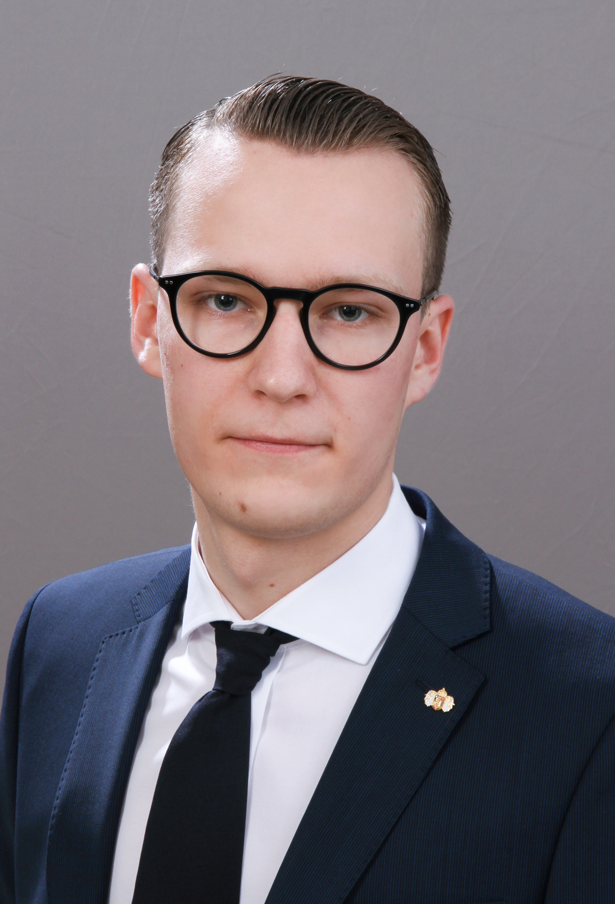

Rólam

Üdvözöllek!
Nagy Róbert K. vagyok, 20 éves, jelenleg a BME-n tanulok gépészetet. Furcsa hobbim a horológia azaz az idő mérésére szolgáló eszközök tudománya és művészete, valamint szetek festeni és rajzolni. Szabadidőmben főleg régi órák javításával, felújításával foglalkozom.
Kedvenc könyveim a Gyűrűk ura trilógia és a Harry Potter sorozat.
Kedvenc festőm: Csontváry